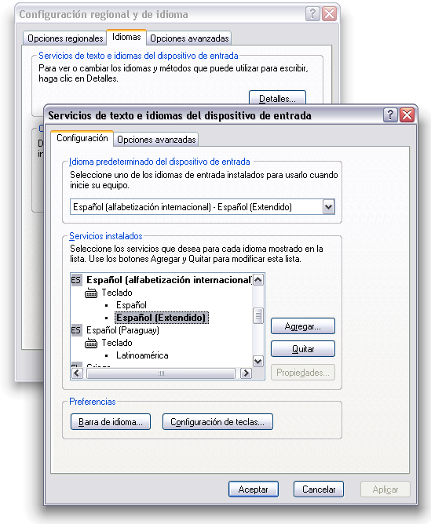

Teclado español extendido para Windows (XP, Vista, 7, 8, 10)
Este teclado extiende el predeterminado en Windows para incluir nuevos caracteres importantes en español y que no están incluidos en el original, en especial las comillas latinas. Una vez descargado, basta con abrir el archivo zip, leer el breve manual y hacer doble clic en el instalador kbdspax.msi. Luego hay que seleccionar en teclado en el panel de control (y puede que haya que reiniciar):

Me funciona en Vista, aunque para instalarlo puede que haya que desactivar el UAC. También hay una versión para Windows 7, 8 y 10.
También añade cuadratines, espacios finos y signos diversos como el calderón, el párrafo…, aunque con las limitaciones expuestas en el manual.
[Por cierto, la sombra de las ventanas de la figura la hace la utilidad YzShadow, que mejora enormemente la claridad de la interfaz de XP.]
Una solución alternativa al mismo problema, a la que merece la pena echar un vistazo, es AllChars for Windows.
Descarga gratuita
- kbdspax.zip (ZIP, 70k, XP, Vista).
- kbdespx.zip (ZIP, 315k, Windows 7, 8, 10, tanto 32 como 64).